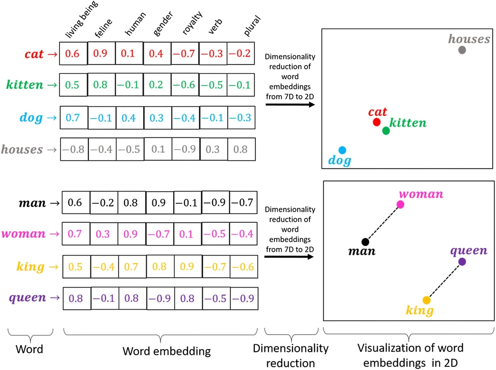

Focus on Embeddings: The Language of Meaning

- What are Embeddings?
Embeddings are numerical representations of text, images, or other data in a high-dimensional space.
They capture the semantic meaning of the content. Chunks of text with similar meanings will have vectors that are "close" to each other in this space.
- Why are they important for RAG?
They allow us to perform "semantic search" or "similarity search".
Instead of matching keywords, we can match concepts and meanings, leading to much more relevant search results.